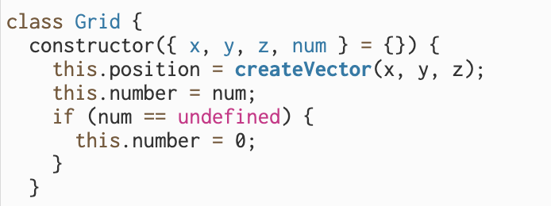
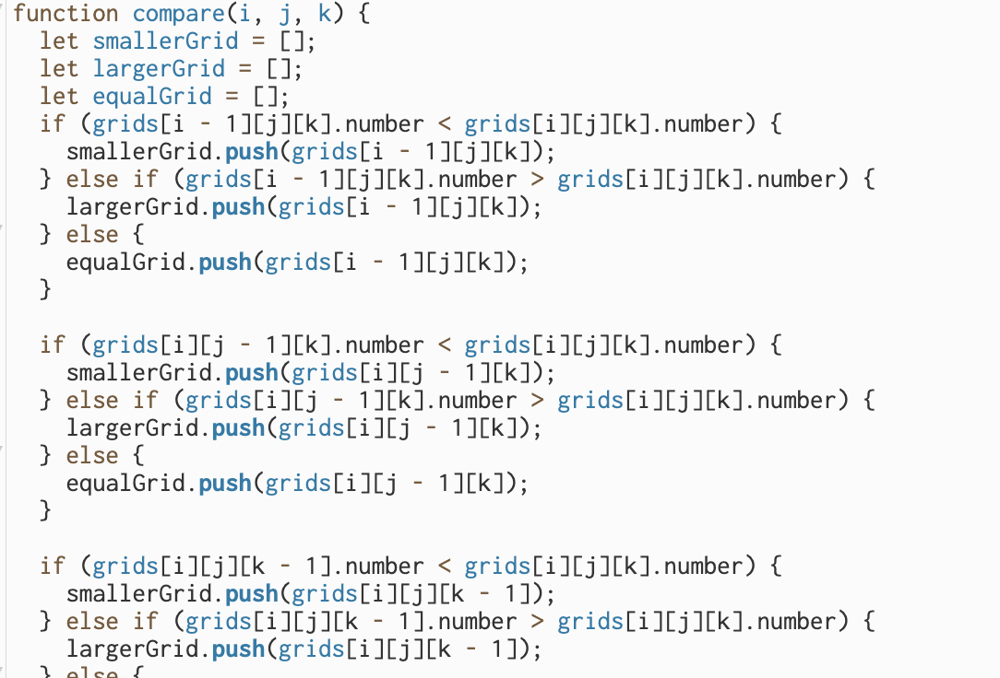
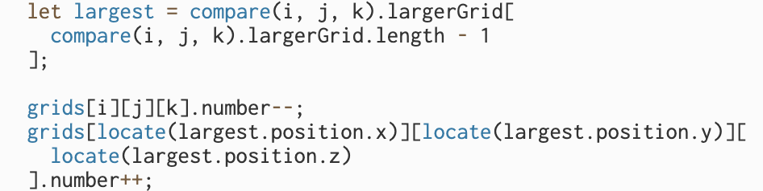
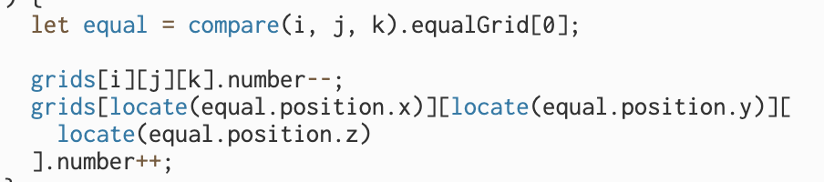

Documentation
Intention
The project intends to create a 3-dimensional grid system where each grid possesses a numerical value that can be exchanged and interact with the grids around it.
Process
I started by creating a 3D array of grid objects for the grid system. Each grid object has an x, y, and z position and a numerical value.
There are four possible interactions that I implemented into the system: randomize, clear, add, and subtract. Randomize assigns random integers from 0 to 99 to random grid objects. Clear resets the numerical value of all the grid objects to 0. Subtracting and adding are more complicated as they compare the numerical value of each grid to their six neighboring grids using the compare method.
The compare method creates three sorted arrays: smallerGrid[], largerGrid[], and equalGrid[]. The method compares the current grid with each of its neighboring grids to decide if it is larger, smaller, or equal and adds it to the respective array.
![The compare method creates three sorted arrays: smallerGrid[], largerGrid[], and equalGrid[]. The method compares the current grid with e...](page_asset/img3.png)
The compare method returns the three arrays sorted based on their numerical values from smallest to largest. For the subtract function, the program gives one numerical value to its smallest neighbor that it is larger than.

On the other hand, the add function gives one numerical value to its largest neighbor that it is smaller than.
If no neighboring grids are larger than it, the program will give one numerical value to a neighbor that possesses an equal numerical value.
I then enhanced the program’s visuals by mapping each grid’s stroke weight and opacity relative to the numerical value.

Lastely, I implemented a cam() method that changes the camera angle every 150 iterations.